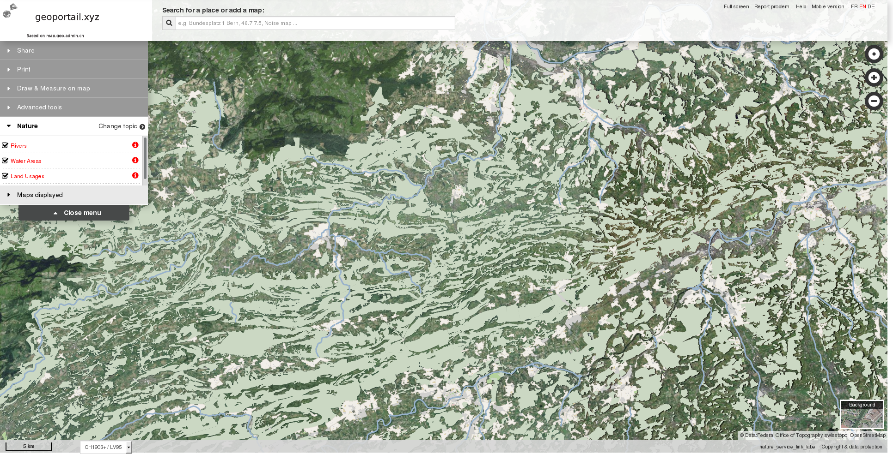

Notre solution de géoportail est basée sur mf-geoadmin3, une solution OpenSource créée par l'office fédéral suisse de topographie. Cette solution, à la fois simple, complète et ergonomique, est considérée comme une des meilleures du marché.
Nous vous proposons d'adapter cette solution à vos besoins en ajoutant ou modifiant des fonctionnalités existantes. Nous pouvons également héberger vos données et votre serveur de carte.
Avec cette solution, vous disposez d'une interface ergonomique pour :

Démonstration » Nous contacter pour un devis »
Nous avons déjà adapté mf-geoadmin3 :